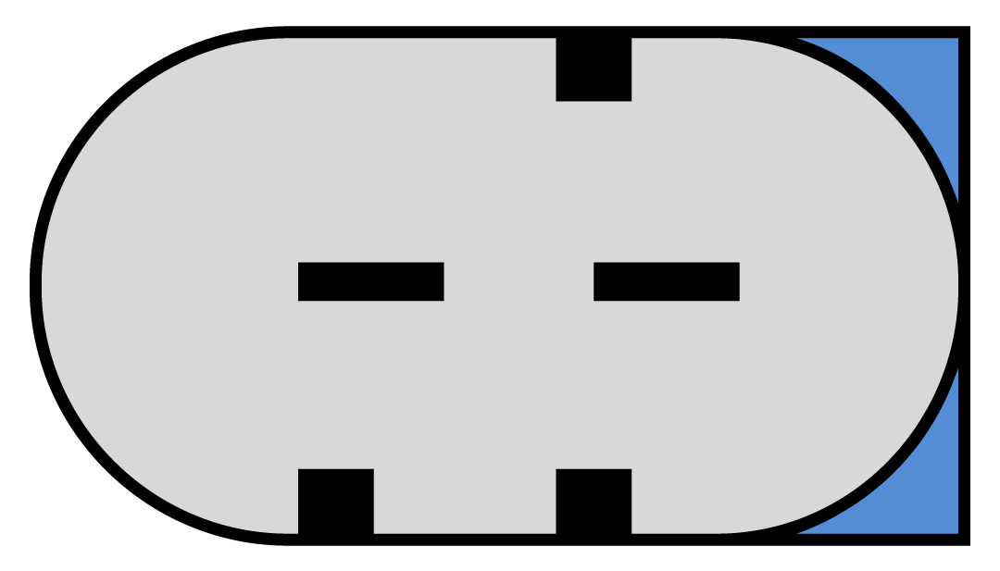

uitgebreide en betrouwbaretech info
Als u technische vragen heeft over Motoplat, neem gerust contact met ons op via het contactformulier.
ned
nederlands
english
deutsch
français
español
português
中文
русский
lin aansluiting
meer info
Recently we have developed new LIN protocols and reorganized them for use on several Motoplat testers. The LIN signal will be now displayed from LIN_1 to LIN_21 together with its ID code. If new LIN protocols appear on the market, we will add more numbers if needed. We did this to make development in remanufacturing easier and cheaper and more clear for customers. Again, you don't need to have a regulator for every alternator, just arrange the regulators in groups or ID codes. So if you know that LIN-2 is used on Mercedes and VW, you just choose the cheaper one and it is compatible and will save money and storage space.
LIN-1 and LIN-2 Protocols are used from 2002 up to 2011. Regulators LIN-1 and LIN-2 with different codes cannot be interchanged: LIN-1 has to be replaced by LIN-1, the same with LIN-2. All the others above LIN-2 have different systems and baud rates, so they cannot be interchanged. The code that shows up on the screen is the identification code of the regulator which is sent to the ECU to be identified. So to say, they are speaking the same language.
This is where the protocol(ID) will appear, for example: BMW LIN-Infineon or new Valeo CG series alternators. If you check an alternator and on the screen a LIN-4 (Honda) protocol shows up, but isn't a Honda alternator, it means it is controlled by the same protocol. It is not possible to interchange BOSCH and VALEO alternators with the same LIN protocol, because they use different addresses(ID), so it will not work on the car!
Download het volgende Excel bestand om een overzicht te krijgen van de verschillende protocol en autofabrikanten.
Please note that we have taken the responsibility upon ourselves to reorganize the LIN-protocols. 19 of the LIN-protocols as mentioned above, do not officially exist by the OE car manufacturers around the world, except for LIN-1 and LIN-2!
The above car manufacturers are mentioned as an example only.
bss aansluiting
meer info
BSS stands for Bit Synchronous Single Wire. There are 3 different BSS signals. The difference between them is the ability to show different alternator errors:
BSS-1 = only shows a mechanical or an electrical error
BSS-2 = only shows a mechanical or an electrical error
BSS-3 = only shows a mechanical and electrical error
It is not possible to interchange BSS-1 and BSS-2 regulators with each other because the car ECU can ask about a certain error and if it doesn't get the right answer, it will show an alternator error (charging lamp on) on the dashboard. BSS-3 can be used for BSS-1 and BSS-2 because it is universal (BSS-3 can provide information about both errors). BOSCH voltage regulators are all BSS-3, so you never have to interchange it with another regulator. Caution should be taken with VALEO regulators, because they came in 3 different options: BSS-1, BSS-2 and BSS-3. From our experience we know that it is impossible to purchase new VALEO BSS-3 Regulators for now.
For example, on the BMW E60 series cars from 2003 and up there is a Valeo TG17C010 alternator mounted that has a BSS-2 system onboard. Some years later they used the same alternator, but its number is replaced by the TG17C048 which has a BSS-3 regulator. If you order a Valeo voltage regulator for that particular alternator you will receive a BSS-2 regulator. If you purchase a new TG17C048 alternator, it will be equipped with a BSS-3 regulator.
We have checked the signal coming from the ECU on a BMW E60 that had the TG17C048 (BSS-3) OEM alternator, but it was BSS-2. Probably the BMW factories are getting ready to upgrade the protocol into BSS-3, but for now they just equip the cars with BSS-3 alternators. Most probably the BSS protocol will no longer be developed, as they will be using the new LIN-INFINEON in the future.
Same situation is with BMW TG17C034 and VW TG17C020: OEM comes with BSS-3, aftermarket BSS-2 and it should work without any problems. In such situations we will advise to order the one of the Valeo voltage regulators and check if it is really a BSS-1, BSS-2 or BSS-3 regulator. This way you will know for sure and you could mount that specific BSS regulator on that alternator. This way you don’t need to have many different regulators for every different BSS alternator.
vw aansluiting
meer info
We investigated the possibility to find out the connections of an alternator, by checking the position of the sliders inside the so called "VW connectors" and it is possible.
As you will see in the COM connector below, the slider on the bottom is straight across the space in between the other two sliders on top. In this case, it is 100% sure that it is a COM connector. It doesn't matter if it has a 1 or a 2 pin connector.

Fig. 1
When looking at figure 2 and 3 below, you will see that the sliders are in a different position than the COM connector above. Figure 2 shows the two sliders on the bottom. The one on the right is opposite of the one on top. Looking at figure 3, the sliders are exactly the opposite of the figure 2 connector.
Fig. 2

Fig. 3
c aansluiting
meer info
Dynamo's van automerken als Toyota en Honda hebben een C-aansluiting. U kunt de C-aansluiting in de meeste gevallen herkennen aan de plug met een vierkante en ovale vorm.
De volgende aansluitingen zijn aanwezig:
L = Waarschuwingslampje
IG = Contact
C = Computer
FR = Feedback
Het testen van de C-aansluiting lijkt moeilijk, maar is dat absoluut niet. Als u de C-aansluiting verbindt met massa, zult u zien dat het VSP (Voltage Set Point) daalt naar 12,8 V. Bijvoorbeeld: tijdens het accelereren van de auto is de aansluiting door de ECU verbonden met massa en is de dynamo tijdelijk uitgeschakeld. Dit zorgt voor een lager brandstofverbruik.
com aansluiting
meer info
Moderne dynamo's hebben een COM-aansluiting. Hieronder vindt u meer informatie over deze aansluitingen en de protocollen.
Wat is COM? COM staat voor Communication of voor Computer. Het is een digitaal communicatiesignaal dat ook wel in bytes wordt uitgedrukt.
Functies:
Deze aansluitingen zijn ontwikkeld om brandstof te besparen
Deze aansluitingen gebruiken een digitaal signaal waarvan de snelheid verschilt
Hoe sneller de dynamo reageert op de commando's van de ECU van de auto, hoe sneller er brandstof wordt bespaard
De communicatiesnelheid wordt de Baud-rate genoemd
com aansluiting
BSS-1
BSS-2
BSS-3
LIN-1
LIN-2
LIN-3
LIN-4
LIN-5
LIN-6
LIN-7
LIN-8
LIN-9
LIN-10
LIN-11
LIN-12
LIN-13
LIN-14
LIN-15
LIN-16
LIN-17
LIN-18
LIN-19
LIN-20
Overdrachtssnelheid van een seriële verbinding: de hoeveelheid bits die per seconde over een seriële verbinding kan worden verstuurd. Een maat voor de snelheid waarmee een modem gegevens doorgeeft. Baud wordt vaak verward met bps (aantal verzonden bits per seconde), maar is de eenheid voor het aantal gebeurtenissen, of signaalwisselingen, per seconde. In High Speed digitale communicatie kan een gebeurtenis meer dan één bit zijn, zodat het aantal baud niet per se gelijk is aan het aantal bps. Bps is een nauwkeurigere eenheid die gebruikt wordt voor modems. Bijvoorbeeld: een 9600 baud-modem dat 4 bits per gebeurtenis codeert, werkt in feite met 2400 baud, maar heeft een overdrachtssnelheid van 9600 bps (2400 gebeurtenissen keer 4 bits per gebeurtenis) en zou dan ook een 9600 bps-modem genoemd moeten worden.
dfm aansluiting
meer info
DF(M) stands for Digital Field Monitor. Every alternator brand has a different abbreviation for the DF(M) connection, for example: FR (Field Return), DF (Digital Field), DFM (See above), M (Monitor), LI (Load Indicator). They all function in the same way.
These are the following functions. About the DFM connection there is a positive and negative measurement and both work with a block pulse. When the alternator load increases the block pulse depending on the car application becomes wider or smaller. This is measured in % also called PWM(Pulse Width Modulation). The car ECU then knows what the load is at a specific moment during charging. If the load is to high the car ECU can shut down some car accessories and or increase the idle speed.
DFM (M,FR,DF,LI,F) is a block signal (information) that is sent from the alternator to the car ECU. It shows the load level of the rotor of the alternator, also known as electromagnetic force. This has a direct influence on the produced energy of the alternator.
The voltage is regulated by turning on the rotor current with a frequency of eg. 150HZ, which changes the electromagnetic force. The longer the duration time of the current, the wider the duty cycle will be.
pcm aansluiting
meer info
De PCM (Powertrain Control Module) wordt in Europa gebruikt bij modellen van Ford en Landrover. Het signaal werkt op dezelfde wijze als het DFM-signaal, maar de ECU van de auto stuurt dit signaal naar de regelaar om het VSP (Voltage Set Point), mede op basis van de actuele accutoestand (AS) en de belasting (LI), aan te passen.
Hoe breder de puls, hoe hoger het VSP is, en omgekeerd. Dit signaal heeft een standaardinstelling van 5 V, 125 Hz en 55% PWM voor een VSP van ongeveer 14,2 V.
rlo aansluiting
meer info
De RLO-aansluiting wordt bij toepassingen van Toyota gebruikt, zoals de 104210-4521.
Deze RLO-aansluiting is verbonden met de ECU van de auto die op zijn beurt is verbonden met een sensor bij of op de accu. Deze sensor meet permanent de toestand van de accu en verstuurt een bloksignaal met een bijzonder lage frequentie (7,5 Hz). Afhankelijk van de PWM van dit signaal wordt het VSP aangepast. Hoe breder de blokpuls, hoe lager het VSP is.

Considering construction solutions, these Valeo alternators can be divided into two different groups. (English only)

The production and distribution of electric energy on the board of a modern car already require...(English only)

One of the ways to reduce the fuel consumption of a vehicle is to turn off the engine...(English only)